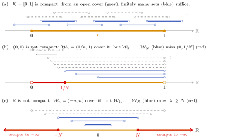

Appendix B • Proofs & Comments
B.19 Compactness and the integral over a region (§8.2)
The integral (8.3) over a region \(\mathcal{D} \subseteq \mathcal{U}\) assumes that \(\overline{\mathcal{D}}\) is compact and contained in \(\mathcal{U}\). This appendix defines the two notions involved and shows what the assumption does: it turns the definition into an ordinary integral of a bounded function over a bounded subset of \(\mathbb{R}^d\), which is therefore finite.
Closure. The closure of \(\mathcal{S} \subseteq \mathcal{M}\) is the smallest closed set containing it, \[ \overline{\mathcal{S}} \coloneqq \bigcap \big\{ \mathcal{C} \subseteq \mathcal{M} \;\big|\; \mathcal{M} \setminus \mathcal{C} \in \mathcal{O}, \; \mathcal{S} \subseteq \mathcal{C} \big\} , \] i.e. \(\mathcal{S}\) together with its boundary points; e.g. \(\overline{(-1, 1)} = [-1, 1]\) in \(\mathbb{R}\).
Compactness. A family \(\{ \mathcal{W}_a \}_{a \in A}\) of open sets, with \(A\) possibly infinite, is an open cover of \(\mathcal{K} \subseteq \mathcal{M}\) if \(\mathcal{K} \subseteq \bigcup_{a \in A} \mathcal{W}_a\). The set \(\mathcal{K}\) is compact if every open cover has a finite subcover: \[ \mathcal{K} \subseteq \bigcup_{a \in A} \mathcal{W}_a , \quad \mathcal{W}_a \in \mathcal{O} \quad \longrightarrow \quad \mathcal{K} \subseteq \mathcal{W}_{a_1} \cup \dots \cup \mathcal{W}_{a_N} \quad \text{for some } a_1, \dots, a_N \in A . \] Figure B.1 illustrates the definition and the two ways it fails in \(\mathbb{R}\): a missing endpoint, and escape to infinity. In \(\mathbb{R}^d\), the compact sets are exactly the closed and bounded ones (Heine–Borel; not proved here).
Two consequences.
- (i)
Continuous images of compact sets are compact. Let \(\phi : \mathcal{U} \to \mathbb{R}^d\) be continuous and \(\mathcal{K} \subseteq \mathcal{U}\) compact. If \(\{ \mathcal{W}_a \}\) is an open cover of \(\phi(\mathcal{K})\), the preimages \(\mathrm{preim}_\phi(\mathcal{W}_a)\) are open (continuity) and cover \(\mathcal{K}\), so finitely many of them, \(\mathrm{preim}_\phi(\mathcal{W}_{a_1}), \dots, \mathrm{preim}_\phi(\mathcal{W}_{a_N})\), cover \(\mathcal{K}\); then \(\mathcal{W}_{a_1}, \dots, \mathcal{W}_{a_N}\) cover \(\phi(\mathcal{K})\). \(\square\)
- (ii)
Continuous functions on compact sets are bounded. If \(\mathcal{K} \subseteq \mathbb{R}^d\) is compact and \(h : \mathcal{K} \to \mathbb{R}\) continuous, then \(h(\mathcal{K})\) is compact by (i), hence bounded by Heine–Borel: \(|h| \leq C\) on \(\mathcal{K}\) for some \(C \geq 0\). \(\square\)
- (i)
Statement. In the setting of Section 8.2, if \(\overline{\mathcal{D}}\) is compact and contained in \(\mathcal{U}\)2, then \[ \bigg| \int_\mathcal{D} \Omega f \bigg| < \infty . \]
Proof. Let \(h(\alpha) \coloneqq \big( \omega_\mathscr{X} \circ \mathscr{X}^{-1} \big)(\alpha) \, \big( f \circ \mathscr{X}^{-1} \big)(\alpha)\), a continuous function on \(\mathscr{X}(\mathcal{U})\), since \(\omega_\mathscr{X} \in C^\infty(\mathcal{U})\), \(f \in C^\infty(\mathcal{M})\) and \(\mathscr{X}^{-1}\) is continuous.
The region is bounded in the chart. \(\mathscr{X}\) is continuous on \(\mathcal{U} \supseteq \overline{\mathcal{D}}\), so \(\mathscr{X}(\overline{\mathcal{D}})\) is compact by (i), hence bounded by Heine–Borel: \(\mathscr{X}(\mathcal{D}) \subseteq \mathscr{X}(\overline{\mathcal{D}}) \subseteq [-L, L]^d\) for some \(L > 0\).
The integrand is bounded on it. \(h\) is continuous on the compact set \(\mathscr{X}(\overline{\mathcal{D}})\), so, by (ii), \(|h(\alpha)| \leq C\) for all \(\alpha \in \mathscr{X}(\overline{\mathcal{D}})\).
Estimate. \begin{align*} \bigg| \int_\mathcal{D} \Omega f \bigg| &\overset{(8.3)}{=} \bigg| \int_{\mathscr{X}(\mathcal{D})} d^d\alpha \, h(\alpha) \bigg| \leq \int_{\mathscr{X}(\mathcal{D})} d^d\alpha \, |h(\alpha)| \\ &\overset{\text{step 2}}{\leq} C \int_{\mathscr{X}(\mathcal{D})} d^d\alpha \overset{\text{step 1}}{\leq} C \int_{[-L, L]^d} d^d\alpha = C \, (2L)^d < \infty . \end{align*} The integral exists in the first place, as the integral of a bounded continuous function over a bounded open set3. \(\square\)
Without the assumption. Let \(\mathcal{M} = \mathbb{R}\), with an oriented atlas containing the identity chart \((\mathbb{R}, \mathscr{X})\), \(\mathscr{X}(p) = p\), the volume form \(\Omega\) with \(\omega_\mathscr{X} = 1\), and \(f = 1\), so that, in the identity chart, \(\int_\mathcal{D} \Omega f\) is the length of \(\mathcal{D}\). Each part of the assumption can fail on its own:
\(\overline{\mathcal{D}}\) not compact: escape to infinity (Figure B.1(c)). For \(\mathcal{U} = \mathbb{R}\) and \(\mathcal{D} = (0, \infty)\), \(\overline{\mathcal{D}} = [0, \infty)\) is closed but unbounded, step 1 fails, and \[ \int_\mathcal{D} \Omega f = \int_0^\infty d\alpha = \infty . \]
\(\overline{\mathcal{D}}\) compact, but not contained in \(\mathcal{U}\): reaching the edge of the chart (Figure B.1(b)). Take the chart \((\mathcal{U}, \mathscr{Y})\) with \(\mathcal{U} = (0, 1)\) and \(\mathscr{Y}(p) \coloneqq \tan\big( \pi (p - \tfrac{1}{2}) \big)\), compatible with the identity chart and in the oriented atlas, since \(d\mathscr{Y}/dp > 0\); and \(\mathcal{D} = \mathcal{U}\). Then \(\overline{\mathcal{D}} = [0, 1]\) is compact, but its endpoints are not in \(\mathcal{U}\). By (8.1), \(\big( \omega_\mathscr{Y} \circ \mathscr{Y}^{-1} \big)(\beta) = \frac{d}{d\beta} \mathscr{Y}^{-1}(\beta) = \frac{1}{\pi (1 + \beta^2)}\), and \(\mathscr{Y}(\mathcal{D}) = \mathbb{R}\) is unbounded, so step 1 fails: \[ \int_{\mathscr{Y}(\mathcal{D})} d\beta \, \big( \omega_\mathscr{Y} \circ \mathscr{Y}^{-1} \big)(\beta) \, \big( f \circ \mathscr{Y}^{-1} \big)(\beta) = \int_{-\infty}^{\infty} \frac{d\beta}{\pi (1 + \beta^2)} = 1 . \] The value is still finite, the length of \((0, 1)\), but the chart \(\mathscr{Y}\) only yields it as an improper integral over all of \(\mathbb{R}\), whose convergence rests on the decay of the integrand, and to which the Statement does not apply.
Compactness of \(\overline{\mathcal{D}}\) is thus what makes the integral finite, and its containment in \(\mathcal{U}\) is what makes a single chart show this through an ordinary integral over a bounded region.

Equivalently, the closure of \(\mathcal{D}\) taken within \(\mathcal{U}\), \(\mathcal{K} \coloneqq \overline{\mathcal{D}} \cap \mathcal{U}\), is compact: the condition only involves the chart domain. Indeed, if \(\overline{\mathcal{D}} \subseteq \mathcal{U}\), then \(\mathcal{K} = \overline{\mathcal{D}}\). Conversely, a compact \(\mathcal{K}\) is closed in \(\mathcal{M}\), since \(\mathcal{M}\) is Hausdorff (Chapter 3), and contains \(\mathcal{D}\), so \(\overline{\mathcal{D}} \subseteq \mathcal{K} \subseteq \overline{\mathcal{D}}\).
As a Lebesgue integral always; as a Riemann integral when the boundary of \(\mathscr{X}(\mathcal{D})\) has zero volume, e.g. when it is a smooth hypersurface.